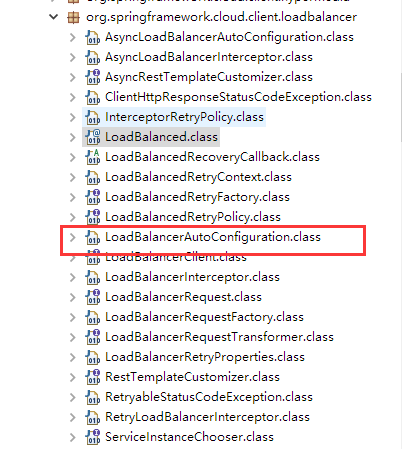

Ribbon 是 Netflix 公司开源的一个负载均衡项目。可以在 Zuul 中使用 Ribbon 做负载均衡，也可以和 Feign 结合使用。在 Spring Cloud 开发中使用的最多的可能就是 RestTemplate 和 Ribbon。代码可能如下：
1 2 3 4 5 6 7 8 @Configuration public class RibbonConfig @Bean @LoadBalanced public RestTemplate restTemplate () return new RestTemplate(); } }
使用 RestTemplate 消费服务接口的代码可能是这样的：
1 2 3 4 5 6 7 8 9 @Service public class RibbonService @Autowired private RestTemplate restTemplate; public String hi (String name) return restTemplate.getForObject("http://eureka-client/hi?name=" +name,String.class); } }
RestTemplate 在 Spring 中就已经存在了，查看以上的代码可以发现 RestTemplate Bean 上有一个 @LoadBalanced 注解，这个注解标记在 RestTemplate 上，让负载均衡客户端 LoadBalancerClient 来配置它。
负载均衡初始化 spring-cloud-commons 包中定义了 LoadBalancerClient
LoadBalancerAutoConfiguration 而在 spring-cloud-commons 中相同的包下面，可以看到 LoadBalancerAutoConfiguration，看类名就能看出来这是一个自动配置类，会在启动时自动加载其中的配置：

1 2 3 4 5 6 7 @Configuration @ConditionalOnClass (RestTemplate.class)@ConditionalOnBean (LoadBalancerClient.class)@EnableConfigurationProperties (LoadBalancerRetryProperties.class)public class LoadBalancerAutoConfiguration }
可以看到该自动配置类上有注解 @ConditionalOnBean(LoadBalancerClient.class) 和 @ConditionalOnClass(RestTemplate.class)，也就是说此类的生效条件是：
1、当前工程中要有 RestTemplate 类
2、在 Spring 的 IOC 容器中必须要有 LoadBalancerClient 的实现 Bean
然后我们看到 org.springframework.cloud.netflix.ribbon 这个包，其中有一个 RibbonAutoConfiguration.java 类（继承于 LoadBalancerClient）。查看到其中配置的 Bean，我们可以发现，只要引入了这个包，就一定会创建一个 RibbonLoadBalancerClient 实例对象加入到 IOC 容器中，并且触发 LoadBalancerAutoConfiguration 配置。
1 2 3 4 5 6 7 8 9 10 11 12 13 14 15 16 17 18 @Configuration @Conditional (RibbonAutoConfiguration.RibbonClassesConditions.class)@RibbonClients @AutoConfigureAfter ( name = "org.springframework.cloud.netflix.eureka.EurekaClientAutoConfiguration" ) @AutoConfigureBefore ({ LoadBalancerAutoConfiguration.class, AsyncLoadBalancerAutoConfiguration.class }) @EnableConfigurationProperties ({ RibbonEagerLoadProperties.class, ServerIntrospectorProperties.class }) public class RibbonAutoConfiguration @Bean @ConditionalOnMissingBean (LoadBalancerClient.class) public LoadBalancerClient loadBalancerClient () return new RibbonLoadBalancerClient(springClientFactory()); } }
我们再看回 LoadBalancerAutoConfiguration，该自动化配置类，主要做了几个配置：
1、维护了一个被 @LoadBalanced 注解修饰的 RestTemplate 对象列表
1 2 3 4 5 6 7 8 9 10 11 @Configuration @ConditionalOnClass (RestTemplate.class)@ConditionalOnBean (LoadBalancerClient.class)@EnableConfigurationProperties (LoadBalancerRetryProperties.class)public class LoadBalancerAutoConfiguration @LoadBalanced @Autowired (required = false ) private List<RestTemplate> restTemplates = Collections.emptyList(); }
2、为每个对象通过调用 RestTemplateCustomizer 添加了一个 LoadBalancerInterceptor 和 RetryLoadBalancerInterceptor 拦截器。他们都是 ClientHttpRequestInterceptor 接口的实现类，ClientHttpRequestInterceptor 是 RestTemplate 的请求拦截器。
1 2 3 4 5 6 7 8 9 10 11 @Bean public SmartInitializingSingleton loadBalancedRestTemplateInitializerDeprecated ( final ObjectProvider<List<RestTemplateCustomizer>> restTemplateCustomizers) return () -> restTemplateCustomizers.ifAvailable(customizers -> { for (RestTemplate restTemplate : LoadBalancerAutoConfiguration.this .restTemplates) { for (RestTemplateCustomizer customizer : customizers) { customizer.customize(restTemplate); } } }); }
拦截器配置 LoadBalancerInterceptor 拦截器 1 2 3 4 5 6 7 8 9 10 11 12 13 14 15 16 17 18 19 20 21 22 23 24 25 @Configuration @ConditionalOnMissingClass ("org.springframework.retry.support.RetryTemplate" )static class LoadBalancerInterceptorConfig @Bean public LoadBalancerInterceptor ribbonInterceptor ( LoadBalancerClient loadBalancerClient, LoadBalancerRequestFactory requestFactory) return new LoadBalancerInterceptor(loadBalancerClient, requestFactory); } @Bean @ConditionalOnMissingBean public RestTemplateCustomizer restTemplateCustomizer ( final LoadBalancerInterceptor loadBalancerInterceptor) return restTemplate -> { List<ClientHttpRequestInterceptor> list = new ArrayList<>( restTemplate.getInterceptors()); list.add(loadBalancerInterceptor); restTemplate.setInterceptors(list); }; } }
RetryLoadBalancerInterceptor 拦截器 1 2 3 4 5 6 7 8 9 10 11 12 13 14 15 16 17 18 19 20 21 22 23 24 25 26 27 28 29 @Configuration @ConditionalOnClass (RetryTemplate.class)public static class RetryInterceptorAutoConfiguration @Bean @ConditionalOnMissingBean public RetryLoadBalancerInterceptor ribbonInterceptor ( LoadBalancerClient loadBalancerClient, LoadBalancerRetryProperties properties, LoadBalancerRequestFactory requestFactory, LoadBalancedRetryFactory loadBalancedRetryFactory) return new RetryLoadBalancerInterceptor(loadBalancerClient, properties, requestFactory, loadBalancedRetryFactory); } @Bean @ConditionalOnMissingBean public RestTemplateCustomizer restTemplateCustomizer ( final RetryLoadBalancerInterceptor loadBalancerInterceptor) return restTemplate -> { List<ClientHttpRequestInterceptor> list = new ArrayList<>( restTemplate.getInterceptors()); list.add(loadBalancerInterceptor); restTemplate.setInterceptors(list); }; } }
由此可见，在程序启动的时候，如果环境中引入了相应的依赖，则会在初始化时对负载均衡器进行配置，实现的方式则是为被 @LoadBalanced 注解修饰的 RestTemplate 对象添加负载均衡拦截器。
LoadBalancerClient 源码分析 首先我们先跟进到上文提到的拦截器(LoadBalancerInterceptor)中，可以发现，在拦截方法（intercept）中，最终是调用了 LoadBalancerClient 的 execute 方法。
1 2 3 4 5 6 7 8 9 10 11 12 13 14 15 16 17 public class LoadBalancerInterceptor implements ClientHttpRequestInterceptor private LoadBalancerClient loadBalancer; @Override public ClientHttpResponse intercept (final HttpRequest request, final byte [] body, final ClientHttpRequestExecution execution) throws IOException final URI originalUri = request.getURI(); String serviceName = originalUri.getHost(); Assert.state(serviceName != null , "Request URI does not contain a valid hostname: " + originalUri); return this .loadBalancer.execute(serviceName, this .requestFactory.createRequest(request, body, execution)); } }
LoadBalancerClient 接口中有三个方法：
1 2 3 4 5 6 7 8 public interface LoadBalancerClient extends ServiceInstanceChooser <T> T execute (String serviceId, LoadBalancerRequest<T> request) throws IOException ; <T> T execute (String serviceId, ServiceInstance serviceInstance, LoadBalancerRequest<T> request) throws IOException ; URI reconstructURI (ServiceInstance instance, URI original) ; }
其父类 ServiceInstanceChooser 中的方法：
1 2 3 public interface ServiceInstanceChooser ServiceInstance choose (String serviceId) ; }
从继承关系里，LoadBalancerClient 的实现类就是 RibbonLoadBalancerClient 类了。
1 2 3 4 5 6 7 8 9 10 11 12 13 14 15 16 17 18 19 20 21 22 23 24 25 26 27 28 29 30 31 32 33 34 35 36 37 38 39 40 41 42 43 44 45 46 47 public <T> T execute (String serviceId, LoadBalancerRequest<T> request, Object hint) throws IOException { ILoadBalancer loadBalancer = getLoadBalancer(serviceId); Server server = getServer(loadBalancer, hint); if (server == null ) { throw new IllegalStateException("No instances available for " + serviceId); } RibbonServer ribbonServer = new RibbonServer(serviceId, server, isSecure(server, serviceId), serverIntrospector(serviceId).getMetadata(server)); return execute(serviceId, ribbonServer, request); } @Override public <T> T execute (String serviceId, ServiceInstance serviceInstance, LoadBalancerRequest<T> request) throws IOException Server server = null ; if (serviceInstance instanceof RibbonServer) { server = ((RibbonServer) serviceInstance).getServer(); } if (server == null ) { throw new IllegalStateException("No instances available for " + serviceId); } RibbonLoadBalancerContext context = this .clientFactory .getLoadBalancerContext(serviceId); RibbonStatsRecorder statsRecorder = new RibbonStatsRecorder(context, server); try { T returnVal = request.apply(serviceInstance); statsRecorder.recordStats(returnVal); return returnVal; } catch (IOException ex) { statsRecorder.recordStats(ex); throw ex; } catch (Exception ex) { statsRecorder.recordStats(ex); ReflectionUtils.rethrowRuntimeException(ex); } return null ; }
RibbonLoadBalancerClient 在 execute 中调用 getServer 方法来获取 Server 对象，跟踪源码可以看到，最终是通过 ILoadBalancer 的 chooseServer 去选择服务实例。
1 2 3 4 5 6 7 8 9 10 11 12 13 14 15 16 17 18 19 protected Server getServer (String serviceId) return getServer(getLoadBalancer(serviceId), null ); } protected Server getServer (ILoadBalancer loadBalancer) return getServer(loadBalancer, null ); } protected Server getServer (ILoadBalancer loadBalancer, Object hint) if (loadBalancer == null ) { return null ; } return loadBalancer.chooseServer(hint != null ? hint : "default" ); }
1 2 3 4 5 6 7 8 9 10 11 12 public interface ILoadBalancer public void addServers (List<Server> newServers) public Server chooseServer (Object key) public void markServerDown (Server server) public List<Server> getReachableServers () public List<Server> getAllServers () }
DynamicServerListLoadBalancer 跟踪源码后，我们可以找到 ILoadBalancer 的继承结构如下，DynamicServerListLoadBalancer 继承了 ILoadBalancer，也就是说我们可以通过跟踪这个类来搞清楚 Ribbon 是如何实现负载均衡的。
成员介绍 查看 DynamicServerListLoadBalancer，BaseLoadBalancer，ILoadBalancer 这三个类，配置了 IClientConfig，IRule，IPing，ServerList，ServerListFilter 和 ILoadBalancer，在 BaseLoadBalancer 中，默认进行了以下配置：
IClientConfig ribbonClientConfig：DefaultClientConfigImpl 配置（用于客户端的负载均衡配置）
IRule ribbonRule：默认路由策略为 RoundRobinRule
IPing ribbonPing：DummyPing
ServerList ribbonServerList：ConfigurationBasedServerList
ServerListFilter ribbonServerListFilter：ZonePreferenceServerListFilter
ILoadBalancer ribbonLoadBalancer：ZoneAwareLoadBalancer
IRule IRule 有很多默认的实现类，都通过不同的算法来处理负载均衡，Ribbon 中实现的 IRule 又以下几种：
BestAvailableRule：选择最小请求数
ClientConfigEnabledRoundRobinRule：轮询
RandomRule：随机选择 Server
RoundRobinRule：轮询
WeightedResponseTimeRule：根据响应时间分配一个权重 weight，weight越低，被选择的可能性就越低
ZoneAvoidanceRule：根据 Server 的 Zone 区域和可用性轮询选择
IPing IPing 的实现类又 PingUrl，PingConstant，NoOpPing，DummyPing 和 NIWSDiscoveryPing。IPing 接口中有一个 isAlive 方法。
1 public boolean isAlive (Server Server)
通过向 Server 发送 ping 信号，来判断 Server 是否可用
PingUrl 真实的去ping 某个url，判断其是否alive
PingConstant 固定返回某服务是否可用，默认返回true，即可用
NoOpPing 不去ping,直接返回true,即可用。
DummyPing 直接返回true，并实现了initWithNiwsConfig方法。
NIWSDiscoveryPing，根据DiscoveryEnabledServer的InstanceInfo的InstanceStatus去判断，如果为InstanceStatus.UP，则为可用，否则不可用。
ServerList ServerList 是定义了获取所有的 Server 的注册列表信息的接口。
1 2 3 4 public interface ServerList <T extends Server > public List<T> getInitialListOfServers () public List<T> getUpdatedListOfServers () }
其实现类是 DiscoveryEnabledNIWSServerList。
ServerListFilter ServerListFilter 可根据配置过滤或者根据特性动态获取符合条件的 Server 列表。该类也是一个接口
1 2 3 public interface ServerListFilter <T extends Server > public List<T> getFilteredListOfServers (List<T> servers) }
源码分析 在 SpringClientFactory 中获取 LoadBalancer 的方法中，我们能看到获取实例的方法是通过反射获取到实现类的含有 IClientConfig 参数的构造方法来构造实例对象。
1 2 3 4 5 6 7 8 9 10 11 12 13 14 15 16 static <C> C instantiateWithConfig (AnnotationConfigApplicationContext context, Class<C> clazz, IClientConfig config) C result = null ; try { Constructor<C> constructor = clazz.getConstructor(IClientConfig.class); result = constructor.newInstance(config); } catch (Throwable e) { } return result; }
DynamicServerListLoadBalancer 构造方法 DynamicServerListLoadBalancer 中的构造方法中调用了一个方法 - initWithNiwsConfig()。
1 2 3 4 5 6 7 8 9 10 11 12 13 14 15 16 17 18 19 20 21 22 23 24 25 26 27 28 29 30 public DynamicServerListLoadBalancer (IClientConfig clientConfig) initWithNiwsConfig(clientConfig); } public initWithNiwsConfig (IClientConfig clientConfig) try { super .initWithNiwsConfig(clientConfig); String niwsServerListClassname = clientConfig.getPropertyAsString(CommonClientConfigKey.NIWSServerListClassName, DefaultClientConfigImpl.DEFAULT_SERVER_LIST_CLASS); ServerList<T> niwsServerListImpl = (ServerList<T>) ClientFactory.instantiateInstanceWithClientConfig(niwsServerListClassName, clientConfig); if (niwsServerListImpl instanceof AbstractServerList) { AbstractServerListFilter<T> niwsFilter = ((AbstractServerList) niwsServerListImpl).getFilterImpl(clientConfig); niwsFilter.setLoadBalancerStats(getLoadBalancerStats()); this .filter = niwsFilter; } String serverListUpdaterClassName = clientConfig.getPropertyAsString( CommonClientConfigKey.ServerListUpdaterClassname, DefaultClientConfigImpl.DEFAULT_SERVER_LIST_UPDATER_CLASS ); this .serverListUpdater = (ServerListUpdater) ClientFactory .instantiateInstanceWithClientConfig(serverListUpdaterClassName, clientConfig); restOfInit(clientConfig); } }
restOfInit 执行剩下的初始化操作 1 2 3 4 5 6 7 8 9 10 11 12 13 14 void restOfInit (IClientConfig clientConfig) boolean primeConnection = this .isEnablePrimingConnections(); this .setEnablePrimingConnections(false ); enableAndInitLearnNewServersFeature(); updateListOfServers(); if (primeConnection && this .getPrimeConnections() != null ) { this .getPrimeConnections().primeConnections(getReachableServers()); } this .setEnablePrimingConnections(primeConnection); LOGGER.info("DynamicServerListLoadBalancer for client {} initialized: {}" , clientConfig.getClientName(), this .toString()); }
上面源码中的 updateListOfServers() 最终是通过 serverListImpl.getUpdatedListOfServers() 来获取所有的服务列表的：
1 2 3 4 5 6 7 8 9 10 11 12 13 14 15 16 @VisibleForTesting public void updateListOfServers () List<T> servers = new ArrayList<T>(); if (serverListImpl != null ) { servers = serverListImpl.getUpdatedListOfServers(); LOGGER.debug("List of Servers for {} obtained from Discovery client: {}" , getIdentifier(), servers); if (filter != null ) { servers = filter.getFilteredListOfServers(servers); LOGGER.debug("Filtered List of Servers for {} obtained from Discovery client: {}" , getIdentifier(), servers); } } updateAllServerList(servers); }
其中 serverListImpl 是 ServerList 的实现类 - DiscoveryEnabledNIWSServerList。而 getUpdatedListOfServers() 的具体实现为：
1 2 3 4 5 6 7 8 @Override public List<DiscoveryEnabledServer> getInitialListOfServers () return obtainServersViaDiscovery(); } public List<DiscoveryEnabledServer> getUpdatedListOfServers () return obtainServersViaDiscovery(); }
obtainServersViaDiscovery 1 2 3 4 5 6 7 8 9 10 11 12 13 14 15 16 17 18 19 20 21 22 23 24 25 26 27 28 29 30 31 32 33 34 35 36 37 38 39 40 41 42 43 44 45 46 private List<DiscoveryEnabledServer> obtainServersViaDiscovery () List<DiscoveryEnabledServer> serverList = new ArrayList<DiscoveryEnabledServer>(); if (eurekaClientProvider == null || eurekaClientProvider.get() == null ) { logger.warn("EurekaClient has not been initialized yet, returning an empty list" ); return new ArrayList<DiscoveryEnabledServer>(); } EurekaClient eurekaClient = eurekaClientProvider.get(); if (vipAddresses!=null ){ for (String vipAddress : vipAddresses.split("," )) { List<InstanceInfo> listOfInstanceInfo = eurekaClient.getInstancesByVipAddress(vipAddress, isSecure, targetRegion); for (InstanceInfo ii : listOfInstanceInfo) { if (ii.getStatus().equals(InstanceStatus.UP)) { if (shouldUseOverridePort){ if (logger.isDebugEnabled()){ logger.debug("Overriding port on client name: " + clientName + " to " + overridePort); } InstanceInfo copy = new InstanceInfo(ii); if (isSecure){ ii = new InstanceInfo.Builder(copy).setSecurePort(overridePort).build(); }else { ii = new InstanceInfo.Builder(copy).setPort(overridePort).build(); } } DiscoveryEnabledServer des = new DiscoveryEnabledServer(ii, isSecure, shouldUseIpAddr); des.setZone(DiscoveryClient.getZone(ii)); serverList.add(des); } } if (serverList.size()>0 && prioritizeVipAddressBasedServers){ break ; } } } return serverList; }
看到这里，可以知道负载均衡器 Ribbon 是通过 Eureka Client 来获取注册列表信息，然后通过配置的路由规则 IRule 来路由。但是它从 Eureka Client 获取注册信息的时间间隔是多久呢？
定时任务更新服务器列表和状态 在构造 DynamicServerListLoadBalancer 的构造方法中的第一行是调用父类中的 initWithNiwsConfig 方法。
1 2 3 4 5 6 7 public initWithNiwsConfig (IClientConfig clientConfig) try { super .initWithNiwsConfig(clientConfig); } }
于是我们跟踪到 BaseLoadBalancer 的 initWithNiwsConfig 方法中：
1 2 3 4 5 6 7 8 9 10 11 12 13 14 15 16 17 18 19 20 21 22 23 24 25 26 27 28 29 30 31 32 33 34 35 @Override public void initWithNiwsConfig (IClientConfig clientConfig) try { initWithNiwsConfig(clientConfig, ClientFactory::instantiateInstanceWithClientConfig); } catch (Exception e) { throw new RuntimeException("Error initializing load balancer" , e); } } @Override public void initWithNiwsConfig (IClientConfig clientConfig, Factory factory) S try { initWithConfig(clientConfig, rule, ping, stats); } catch (Exception e) { throw new RuntimeException("Error initializing load balancer" , e); } } void initWithConfig (IClientConfig clientConfig, IRule rule, IPing ping, LoadBalancerStats stats) setPingInterval(pingIntervalTime); setMaxTotalPingTime(maxTotalPingTime); setRule(rule); setPing(ping); }
以上只保留了关键代码。调用到 initWithConfig 方法中，会执行 setPingInterval(pingIntervalTime) 方法。
1 2 3 4 5 6 7 8 9 10 11 12 public void setPingInterval (int pingIntervalSeconds) if (pingIntervalSeconds < 1 ) { return ; } this .pingIntervalSeconds = pingIntervalSeconds; if (logger.isDebugEnabled()) { logger.debug("LoadBalancer [{}]: pingIntervalSeconds set to {}" , name, this .pingIntervalSeconds); } setupPingTask(); }
其中开启了一个定时任务：setupPingTask() 。在该方法内部使用 ShutdownEnabledTimer 初始化了一个定时器，并且设置每10秒调用 PingTask 任务。
1 2 3 4 5 6 7 8 9 10 11 12 13 14 void setupPingTask () if (canSkipPing()) { return ; } if (lbTimer != null ) { lbTimer.cancel(); } lbTimer = new ShutdownEnabledTimer("NFLoadBalancer-PingTimer-" + name, true ); lbTimer.schedule(new PingTask(), 0 , pingIntervalSeconds * 1000 ); forceQuickPing(); }
PingTask 是 BaseLoadBalancer 的内部类，根据 IPingStrategy 策略来发送 ping 请求获取和更新服务器列表，默认策略是 SerialPingStrategy。在 PingTask 的 run 方法中，执行了另一个内部类 Pinger 的 runPinger 方法。
1 2 3 4 5 6 7 8 9 10 11 12 13 14 15 16 17 18 19 20 21 22 23 24 25 26 27 28 29 30 31 32 33 34 35 36 37 38 39 40 41 42 43 44 45 46 47 48 49 50 51 52 53 54 55 56 57 58 59 60 61 62 63 64 65 66 67 68 69 70 71 72 73 74 75 76 77 78 79 80 81 82 83 84 85 86 87 88 89 90 91 92 93 class PingTask extends TimerTask public void run () try { new Pinger(pingStrategy).runPinger(); } catch (Exception e) { logger.error("LoadBalancer [{}]: Error pinging" , name, e); } } } class Pinger private final IPingStrategy pingerStrategy; public Pinger (IPingStrategy pingerStrategy) this .pingerStrategy = pingerStrategy; } public void runPinger () throws Exception if (!pingInProgress.compareAndSet(false , true )) { return ; } Server[] allServers = null ; boolean [] results = null ; Lock allLock = null ; Lock upLock = null ; try { allLock = allServerLock.readLock(); allLock.lock(); allServers = allServerList.toArray(new Server[allServerList.size()]); allLock.unlock(); int numCandidates = allServers.length; results = pingerStrategy.pingServers(ping, allServers); final List<Server> newUpList = new ArrayList<Server>(); final List<Server> changedServers = new ArrayList<Server>(); for (int i = 0 ; i < numCandidates; i++) { boolean isAlive = results[i]; Server svr = allServers[i]; boolean oldIsAlive = svr.isAlive(); svr.setAlive(isAlive); if (oldIsAlive != isAlive) { changedServers.add(svr); logger.debug("LoadBalancer [{}]: Server [{}] status changed to {}" , name, svr.getId(), (isAlive ? "ALIVE" : "DEAD" )); } if (isAlive) { newUpList.add(svr); } } upLock = upServerLock.writeLock(); upLock.lock(); upServerList = newUpList; upLock.unlock(); notifyServerStatusChangeListener(changedServers); } finally { pingInProgress.set(false ); } } }
该定时任务的大致流程为：
1、首先将用 CAS 来修改 pingInProgress （AtomicBoolean 对象），如果修改不成功，则表示当前有其他线程正在发送 ping 请求，并且还没有执行完毕，所以当前操作可以不再执行。
2、加读锁获取当前服务列表。
3、通过 IPingStrategy 向每个服务器发送 ping 请求，得到一个布尔值的结果集。
3、遍历之前获取到的 Server List，判断服务状态是否有变化，并更新服务列表。（其中状态更改的服务器将会加入到 changedServers 列表中，ping 请求后依然存活的服务会加入到 newUpList 中）
4、最后加写锁更新 UP 状态的服务器列表，并通知服务状态改变
5、全部执行完成后，将 pingInProgress 改为 false。
总结 由此可见，Ribbon的负载均衡，主要是通过 LoadBalancerClient 来实现的，而 Load’BalancerClient 又将具体实现交给了 ILoadBalancer 来处理，ILoadBalancer 通过配置 IRule、IPing 等信息，向 Eureka 获取服务注册列表，并且在初始化时开启一个定时任务，10s 一次向 EurekaClient 发送 ping 请求，来判断服务的可用性，如果服务的可用性发生改变或者服务数量与之前的不一致，则更新当前服务器列表或重新拉取。最后 ILoadBalancer 获取到这些服务列表之后，便可以根据 IRule 来进行负载均衡。
而 RestTemplate 被 @LoadBalanced 注解后，能够实现负载均衡，主要是通过给 RestTemplate 添加拦截器，在请求前通过拦截器（负载均衡）获取到真正的请求地址，最后进行服务调用。
Ref Ribbon 源码
Spring Cloud Commons 源码
Spring Cloud Netflix 源码
Spring Cloud Netflix Ribbon 官方文档
Spring Cloud Ribbon踩坑记录及原理解析
Ribbon原理分析 - Spring For All